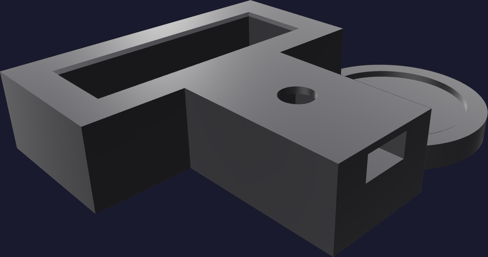
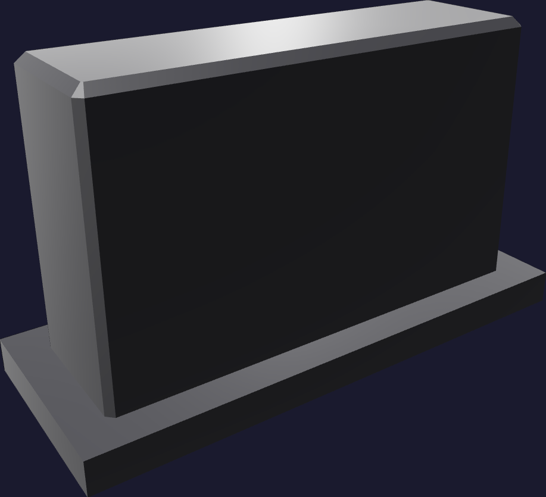
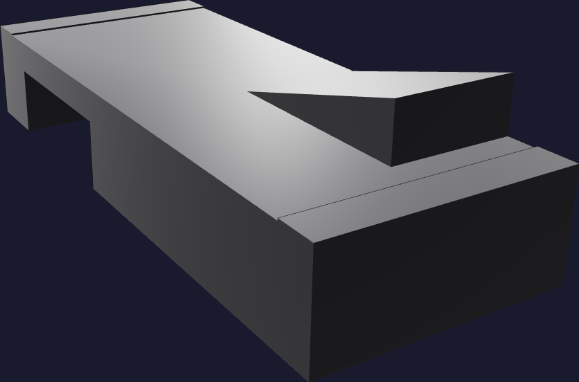

Print · plate 16
Three witnesses first
Plate 1 is 2 h 14 m and 59.7 g. It carries three coupons that reproduce, at full size and in the real print orientation, every fit the two long plates depend on. Print it, check it, correct it — then start the 37-hour plate.



- Print plate 1 alone. Same nozzle, same filament, same 0.16 mm layers as the mold. All three coupons carry the 30 mm/s override.
- Let it cool on the bed, then remove the brim and every string. A string in a bore reads as a tight fit that isn't one.
- Check the three fits on page 7 and the coupon on page 8.